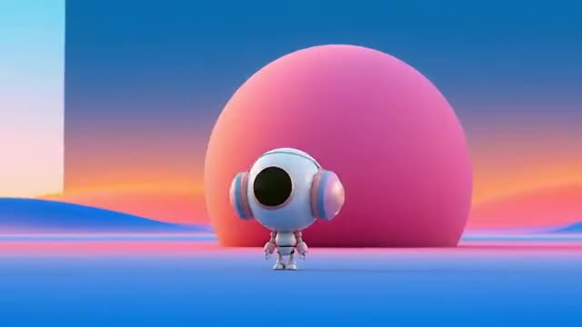
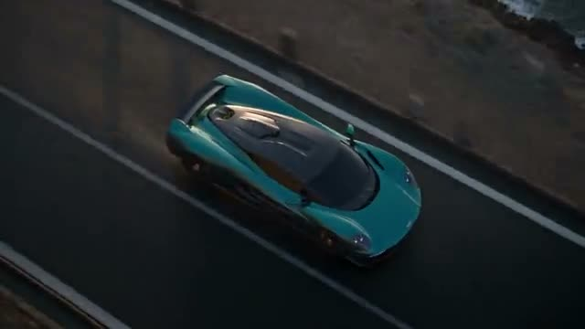
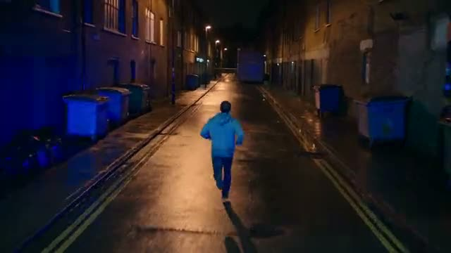
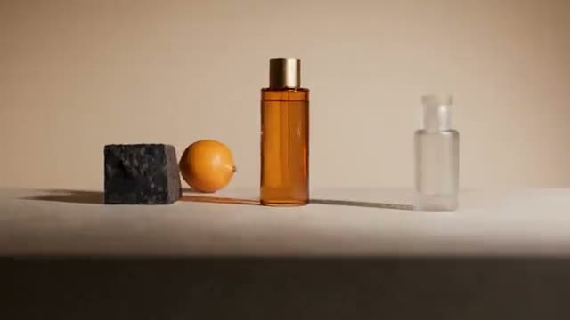
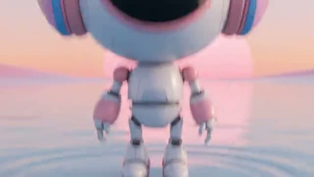

Library / Camera Movements
44 keywords in this category, each one tested and explained in plain language.
Pick keywords as you browse, then press Copy for AI and paste into ChatGPT, Claude or any AI. Copy keywords gives a plain list for Midjourney or Seedance.

The camera curves slowly around the subject, then zooms in hard and fast.

One unbroken shot that starts from above, drops to the wheel, glides to the lamp, circles to the back and rises to a big wide view.

A runner chased down a wet street at night, the camera running ahead, then swinging round to follow.
The camera sweeps vertically or in an arc from a raised arm, moving between ground level and overhead.
The camera glides away from the subject, revealing context and often leaving them small in their world.
Dolly and zoom in opposite directions: the subject stays put while the background stretches.
A tight, quick circle around the subject that makes it seem to spin, ending in a hard zoom.
The camera skims just above the ground beside the subject and snaps its aim hard, up and back down.
The camera swoops down from above in one arc, glides along the subject and lands on a detail.
A low sideways move along the ground that slowly tips the horizon into a tilt.
Two people on a rooftop at night, the camera drifting between each face and a shot of both together.
The camera drops fast from high up to the ground, holds for a beat, then whips sideways.
Stabilized floating movement that follows subjects smoothly through space, no track required.

A slow push and drift across a styled table that settles on the product.
One take that covers three people talking in a room, moving between each face, over-the-shoulder views and a wide.
The whole camera slides sideways past the subject, so near and far things move at different speeds.

Starts at ankle height, snaps up to the face, glides around, then snaps back down.